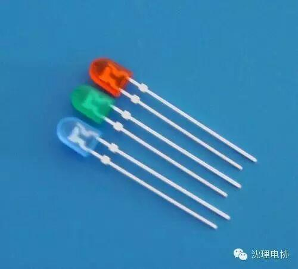
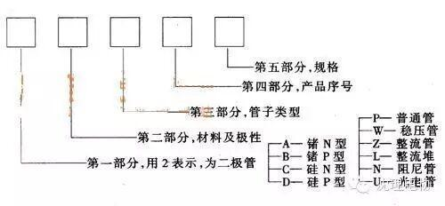

二极管的相关知识

二极管，（Diode），电子元件当中，一种具有两个电极的装置，只允许电流由单一方向流过，许多的使用是应用其整流的功能。而变容二极管（Varicap Diode）则用来当作电子式的可调电容器。大部分二极管所具备的电流方向性我们通常称之为“整流（Rectifying）”功能。二极管最普遍的功能就是只允许电流由单一方向通过（称为顺向偏压），反向时阻断 （称为逆向偏压）。因此，二极管可以想成电子版的逆止阀。几乎在所有的电子电路中，都要用到半导体二极管，它在许多的电路中起着重要的作用，其应用也非常广泛。主要作用
二极管是最常用的电子元件之一，他最大的特性就是单向导电，也就是电流只可以从二极管的一个方向流过，二极管的作用有整流电路，检波电路，稳压电路，各种调制电路，主要都是由二极管来构成的，其原理都很简单，正是由于二极管等元件的发明，才有我们现在丰富多彩的电子信息世界的诞生，既然二极管的作用这么大那么我们应该如何去检测这个元件呢，其实很简单只要用万用表打到电阻档测量一下正向电阻如果很小，反相电阻如果很大这就说明这个二极管是好的。对于这样的基础元件我们应牢牢掌握住他的作用原理以及基本电路，这样才能为以后的电子技术学习打下良好的基础。
主要类型
二极管种类有很多，按照所用的半导体材料，可分为锗二极管（Ge管）和硅二极管（Si管）。根据其不同用途，可分为检波二极管、整流二极管、稳压二极管、开关二极管、隔离二极管、肖特基二极管、发光二极管、硅功率开关二极管、旋转二极管等。按照管芯结构，又可分为点接触型二极管、面接触型二极管及平面型二极管。点接触型二极管是用一根很细的金属丝压在光洁的半导体晶片表面，通以脉冲电流，使触丝一端与晶片牢固地烧结在一起，形成一个“PN结”。由于是点接触，只允许通过较小的电流（不超过几十毫安），适用于高频小电流电路，如收音机的检波等。面接触型二极管的“PN结”面积较大，允许通过较大的电流（几安到几十安），主要用于把交流电变换成直流电的“整流”电路中。平面型二极管是一种特制的硅二极管，它不仅能通过较大的电流，而且性能稳定可靠，多用于开关、脉冲及高频电路中。
命名方法

识别方法
小功率二极管的N极（负极），在二极管外表大多采用一种色圈标出来，有些二极管也用二极管专用符号来表示P极（正极）或N极（负极），也有采用符号标志为“P”、“N”来确定二极管极性的。发光二极管的正负极可从引脚长短来识别，长脚为正，短脚为负。用数字式万用表去测二极管时，红表笔接二极管的正极，黑表笔接二极管的负极，此时测得的阻值才是二极管的正向导通阻值，这与指针式万用表的表笔接法刚好相反。